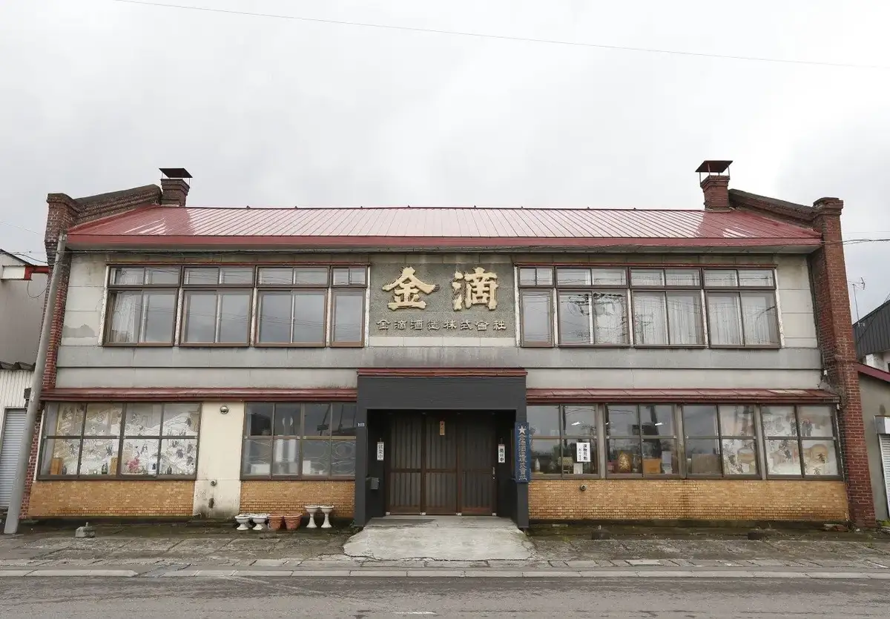
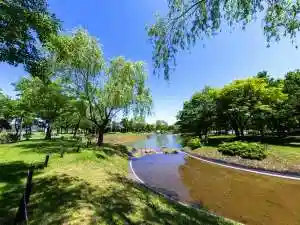
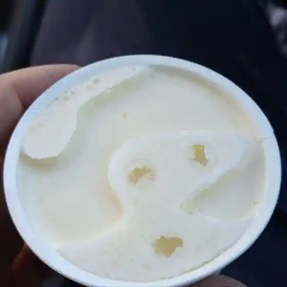
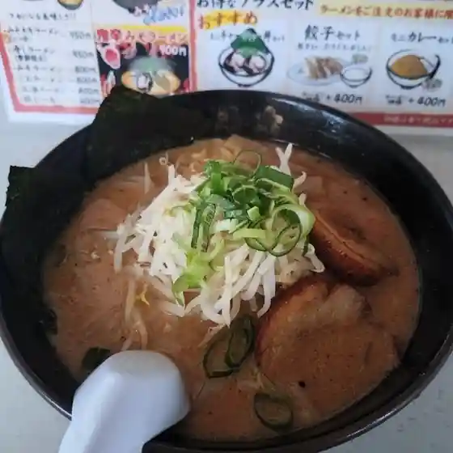
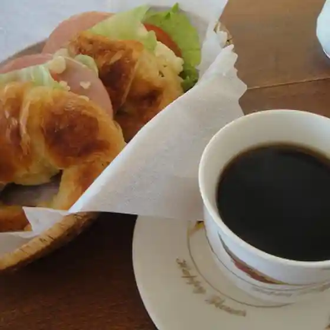
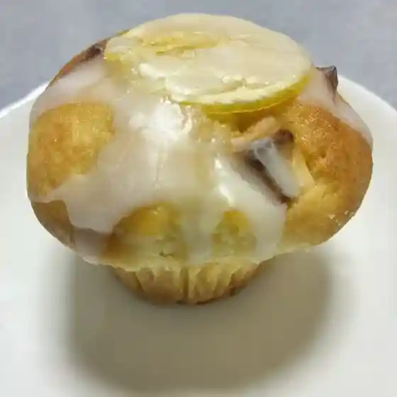
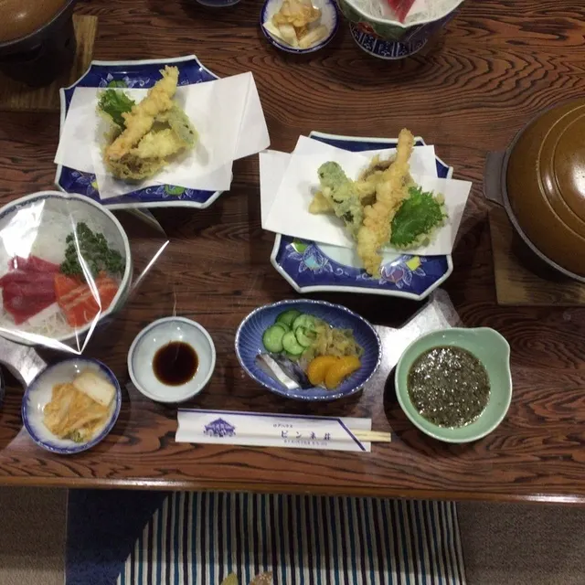
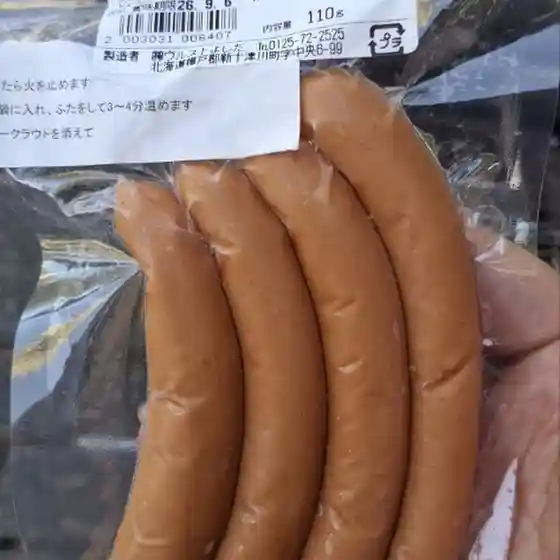
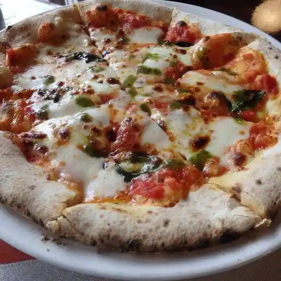
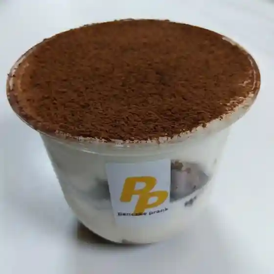

Japan / Hokkaido / Shintotsukawa
Shintotsukawa
Shintotsukawa · Hokkaido
Shintotsukawa
Highlighted on the Hokkaido map.

Stay
グリーンパークしんとつかわ
Guriinpaaku Shintotsukawa
新十津川町 サンヒルズ・サライ
Shintotsukawa Machi Sanhiruzu Sarai
新十津川町 コテージ ヴィラトップ

Shintotsukawa Machi Koteeji Viratoppu
Dining
金滴酒造

Kin Shizuku Shuzou
ラーメンとん太

Raamen Ton Ta
ニース

Niisu
アメユキ

Ameyuki
ピンネ荘

Pinne Sou
ヴルストよしだ

Vurusuto Yoshida
石窯カフェ ヤマト

Ishigama Kafe Yamato
pancake prank

Pancake Prank
クリスタル
Kurisutaru
アテトサイ
Atetosai
かぜのびカフェ
Kazenobi Kafe
なこたこ
Nakotako
ラーメン 7SEVEN
Raamen 7Seven
CrossLab Donut&Cafe
Crosslab Donut&Cafe
Aコープ 新十津川店
A Koopu Shintotsukawa Mise
お梅茶屋
O Umecha Ya
新十津川町そっち岳スキー場食堂
Shintotsukawa Machi Sotchi Gaku Sukii Ba Shokudou
大畠精肉店
Oohata Seinikuten
アトリエ・ロカル
Atorie Rokaru
サンヒルズサライ
Sanhiruzusarai
新十津川物産館
Shintotsukawa Bussan Kan
ファミリーマート 新十津川店
Famiriimaato Shintotsukawa Mise
美緑の宿 グリーンパークしんとつかわ
Bi Midori No Yado Guriinpaaku Shintotsukawa
フーテン食堂
Fuuten Shokudou
Sights
Kin Shizuku Shuzo
Kin Shizuku Shuzo